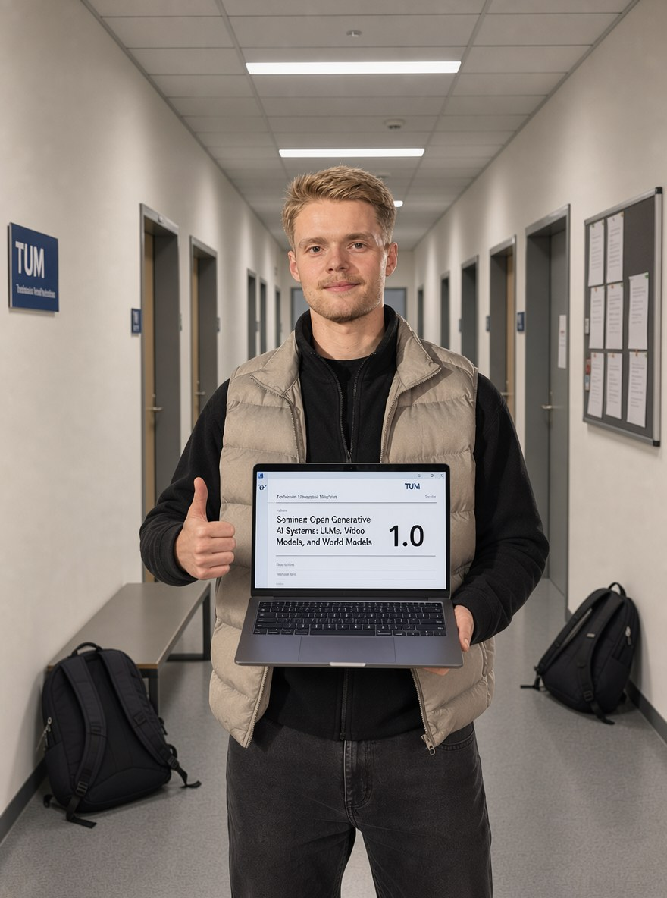
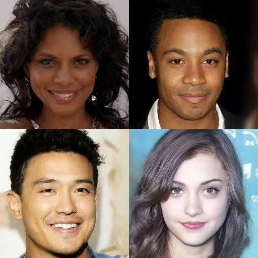
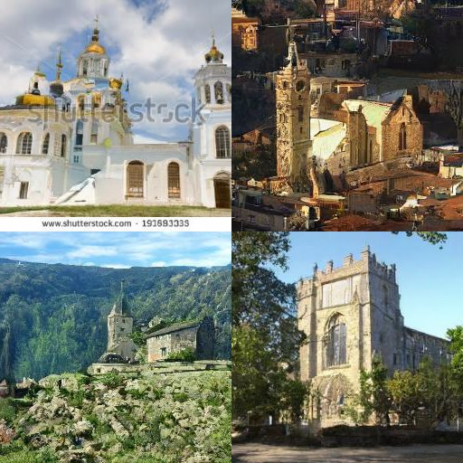
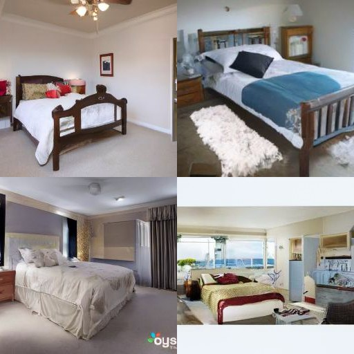
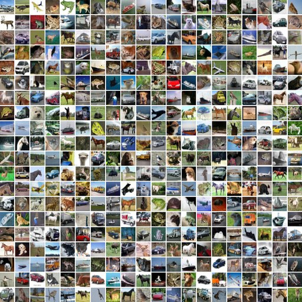
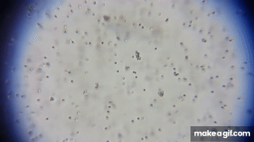

Height = how likely a pixel combination is a real image.
100 small Gaussian steps: every image walks downhill while the peaks melt into one \( \mathcal{N}(0, I) \).
Seen from above: how do we get from this noisy point back to its image?
Idea: a network predicts the noise added in this step, we subtract it, repeat.
Here is another zigzag from the same image. It lands on the same point \( x_t \).
But its last step was different. Best guess for this step's noise: \( \approx 0 \).
So predict the total noise: \( x_t = \sqrt{\bar\alpha_t}\,x_0 + \sqrt{1-\bar\alpha_t}\,\varepsilon \), learn \( \varepsilon_\theta(x_t, t) \).
\( x_{t-1} = \tfrac{1}{\sqrt{\alpha_t}}\big(x_t - \tfrac{\beta_t}{\sqrt{1-\bar\alpha_t}}\,\varepsilon_\theta(x_t, t)\big) + \sigma_t z \)




1000 steps = 1000 network calls.
Ho et al. 2020
Each step moves every sample in two ways.
Deterministic: a pull toward 0.
Random: a small random kick.

Random kicks + deterministic drift.
Forward diffusion is a stochastic differential equation (SDE)\( dx = \underbrace{f(x, t)\,dt}_{\text{drift}} + \underbrace{g(t)\,dW}_{\text{diffusion}} \)
Sampling is integration.
The density follows Fokker–Planck\( \partial_t p_t = -\nabla\cdot(f\,p_t) + \tfrac12 g^2\,\Delta p_t \)
Reversed in time (Anderson 1982)\( dx = \big[f - g^2\,\nabla_x \log p_t\big]\,dt + g\,d\bar W \)
Only unknown: the score. The model can learn it directly.
The uphill direction\( s(x) = \nabla_x \log p(x) \)
For one noised image\( \nabla_{x_t} \log q(x_t \mid x_0) = -\dfrac{\varepsilon}{\sqrt{1-\bar\alpha_t}} \)
So noise prediction = score\( s_\theta(x_t, t) = -\dfrac{\varepsilon_\theta(x_t, t)}{\sqrt{1-\bar\alpha_t}} \)
Same \( p_t \), no noise\( dx = \big[f - \tfrac12 g^2\,\nabla_x \log p_t\big]\,dt \)Song et al. 2021, Score-Based Generative Modeling through Stochastic Differential Equations
Fewer steps: 25 instead of 100.
\( dx = \Big[f + \tfrac12 g^2\,{\color{#f2994a} \dfrac{\varepsilon_\theta(x, t)}{\sqrt{1-\bar\alpha_t}}}\Big]\,dt \)
Sampling walks the reverse SDE: 100 small steps, every step is one network call.
Without the noise (DDIM): one smooth path, but curved. 25 steps.
Flow matching: go straight from the noise to the image. A few steps are enough.
Training: an image \( x_0 \), noise \( \varepsilon \), a random \( t \). Interpolate \( x_t = (1-t)\,x_0 + t\,\varepsilon \) and learn the vector field along the line: \( v_\theta(x_t, t) \approx \varepsilon - x_0 \).
Two trained networks, same architecture: ε for DDPM and DDIM, velocity for flow matching. MLP, 4 layers × 256, SiLU, sinusoidal time embedding (≈ 207k parameters). Adam, lr \( 10^{-3} \) with cosine decay, batch 2048, 30k steps on fresh samples (≈ 61M samples, no epochs), ≈ 6 min each on a CPU.
A 64×64 image has \( 12{,}288 \) dimensions. Almost all of that space is noise.
Model: VAE Explainer
Generate in the small latent space, decode once at the end. Stable Diffusion: 48× fewer numbers per step than pixels.
Matching image and caption: similar vectors. Trained on 400M pairs.
The text vector is the condition \( c \) in \( v_\theta(z, t, c) \). SD 1 uses CLIP, SD3 and FLUX use CLIP + T5.
The word closest to the difference (cosine similarity).
Images from Welch Labs, But how do AI images and videos actually work? (YouTube)
\( {\color{#6fa8ff} v_w} = {\color{#6cc070} v(z, t, \varnothing)} + w\,\big({\color{#ef6b6b} v(z, t, c)} - {\color{#6cc070} v(z, t, \varnothing)}\big) \)
DDPM, SD 1 and 2
SD3, FLUX, video models
\( q(x_t \mid x_{t-1}) = \mathcal{N}\big(x_t;\ \sqrt{1-\beta_t}\,x_{t-1},\ \beta_t I\big) \)
\( q(x_t \mid x_0) = \mathcal{N}\big(x_t;\ \sqrt{\bar\alpha_t}\,x_0,\ (1-\bar\alpha_t) I\big), \quad \bar\alpha_t = \textstyle\prod_{s \le t} (1-\beta_s) \)
\( \Leftrightarrow\ x_t = \sqrt{\bar\alpha_t}\,x_0 + \sqrt{1-\bar\alpha_t}\,\varepsilon, \quad \varepsilon \sim \mathcal{N}(0, I) \)
\( p_\theta(x_{t-1} \mid x_t) = \mathcal{N}\big(x_{t-1};\ \mu_\theta(x_t, t),\ \sigma_t^2 I\big) \)
\( \mathcal{L} = \mathbb{E}_{t,\,x_0,\,\varepsilon} \big\lVert \varepsilon - \varepsilon_\theta(x_t, t) \big\rVert^2 \)
At sampling time \( x_0 \) is unknown: the network has to stand in for it.
One network call per step: \( T = 1000 \) calls per image.